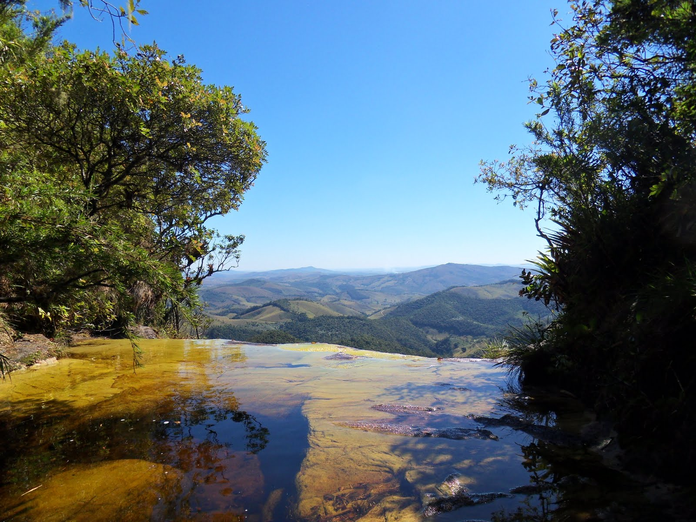
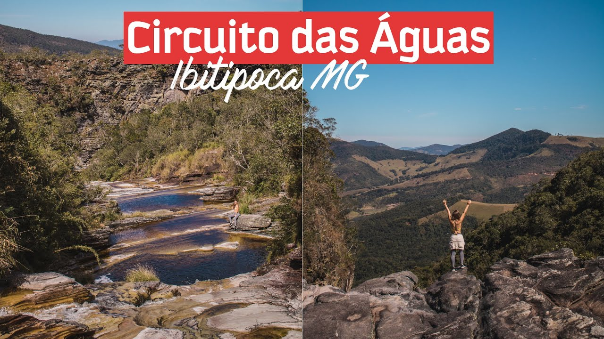
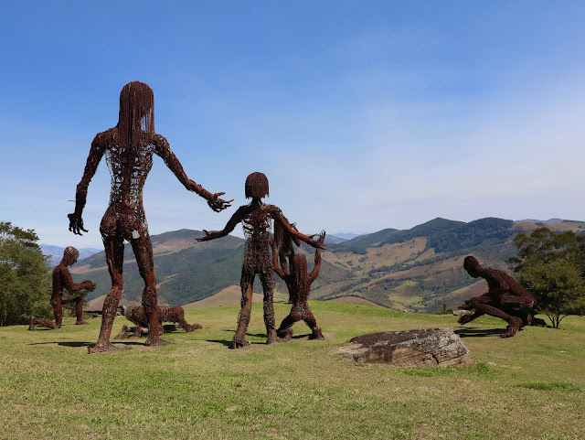

Ruas de paralelepípedos, casinhas charmosas com produtos locais, um
barzinho que convida os pedestres a pararem e apreciarem uma cerveja
artesanal acompanhado de um bom torresmo. Pode parecer cenário de outro
tempo, mas é assim que o vilarejo Conceição do Ibitipoca, pertencente ao
município de Lima Duarte (MG), segue preservado e recebendo os
viajantes. A tranquilidade, com pássaros ao fundo e nuvens em movimento,
é típica do interior mineiro.
Com tanta simplicidade, engana-se
quem pensa que não haja conforto e agitos gastronômicos pelas
redondezas. Bem longe da vida apressada das grandes cidades, o distrito
oferece acomodações próximas à natureza, restaurantes simpáticos com
pratos regionais e um circuito cultural que movimenta a serra em
determinados meses.
Muito procurada por aventureiros e comunidades alternativas pela beleza
de suas águas, Conceição do Ibitipoca é o ponto de partida para o Parque
Estadual do Ibitipoca, servindo como porta de entrada para uma das mais
belas e visitadas reservas naturais do Brasil. Principal chamariz da
vizinhança, o parque é cercado de grutas, cachoeiras e paisagens de
tirar o fôlego, firmando-se como aposta certa para quem é adepto do
ecoturismo.
Não falta charme nas acomodações da vila, que satisfazem diferentes tipos de bolsos e gostos. Chalés e pousadas predominam nos arredores, garantindo uma experiência rústica com vista para as montanhas
A grande atração turística que movimenta a economia do vilarejo é o
Parque do Ibitipoca, que, de acordo com o governo de Minas Gerais, é o
parque mais visitado do estado. Coloque roupas confortáveis e se prepare
para longas caminhadas em meio a mata. Por lá, é possível apreciar
paisagens naturais de cair o queixo, como o imperdível Janela do Céu,
deslumbrante mirante sobre uma cachoeira de sete quedas, e as ruínas da
capela de Bom Jesus da Serra, que tem uma vista voltada para a região
das serras da Mantiqueira e dos Órgãos.
Aqui é possível também
apreciar e ajudar na preservação da rica biodiversidade do entorno.
Cactos, orquídeas, candeias e bromélias são algumas espécies que
florescem ao longo do caminho em razão da pluralidade de ecossistemas,
como a mata atlântica, caatinga e cerrado. Espécies ameaçadas de
extinção também estão presentes e apontam um cuidado maior com a fauna
local, como o lobo-guará – símbolo da região e astro da nota de
R$200,00. A onça parda e o primata sauá, nativo da Mata Atlântica,
também vivem pelas redondezas.
O Parque Estadual da Ibitipoca (MG) já disponibiliza visitas
facilitadas para pessoas com deficiência. O Ministério do Turismo,
por meio do Programa Turismo Acessível, disponibilizou duas cadeiras
utilizadas para que esses turistas possam aproveitar as belezas que
o circuito ecológico oferece.
A “Julietti”, como é batizada, é
uma cadeira composta por uma única roda, que facilita o acesso das
pessoas com deficiência a ambientes de difícil acesso e proporcionam
uma experiência única para aproveitar a natureza. O equipamento, que
é conduzido por dois puxadores, possui um banco com cinto de
segurança, garantindo comodidade ao visitante.
Com a vista impressionante de uma cascata que se abre para o horizonte, antes de uma queda de 100m, a Janela do Céu é o lugar mais procurado do Parque Estadual do Ibitipoca e talvez um dos mais fotografados de Minas Gerais. Mas, alcançar esse pedacinho de paraíso não é tarefa fácil. Estive por lá e posso dizer para você: a trilha é para os fortes. São 16 km (ida e volta) de muitas subidas e descidas. Mas o resultado vale à pena: paisagens de cair o queixo! Prepare-se – psicologica e fisicamente – e siga em frente! 
O Circuito das Águas é o mais curto do Parque Estadual do Ibitipoca, com 5km de extensão ao total. E, diferentemente da Janela do Céu em que você anda muitos quilômetros até chegar nos atrativos, no Circuito das Águas bastam alguns metros.
Um platô na Pedra do Tatu guarda o cartão-postal da Comuna do Ibitipoca: as sete esculturas descomunais de ferro reciclado, integradas à natureza. As impressionantes criações têm em média 9 metros de altura e pesam de 6 a 9 toneladas cada uma. As obras de arte vieram de São Francisco, na Califórnia (EUA), depois que um amigo do Renato, o proprietário da Comuna, viu a Ecstasy (mulher gigante no primeiro plano) no festival Burning Man. Renato conheceu os trabalhos da artista Karen Cusolio, que se recusou a vendê-los. Depois de muito tempo, ela disse que só venderia todas as peças juntas – afinal, são uma família, e cada uma representa uma religião. Karen estabeleceu duas condições: deveria antes conhecer o lugar onde as obras descansariam e ela mesma cuidaria do transporte, recusando-se a “fatiá-las”. Ao visitar a Comuna de Ibitipoca, a artista se encantou: “Agora sim elas encontraram seu lar”. E aí iniciou uma saga para cruzar o oceano e trazê-las, chegando de carreta até os portos, atravessando o Atlântico de navio; após mais um trecho de transporte de caminhões, as esculturas finalmente foram içadas ao seu destino final. Seu esplendor e magnitude, somados à imponente natureza ao seu redor, são espetaculares. O pôr do sol nesse local é uma experiência imperdível, assim como uma refeição preparada em um forno a lenha ali montado.

A melhor época para curtir o parque é entre os meses de abril e
setembro, quando chove menos. Entre março e novembro faz bastante calor,
mas as chuvas e os raios também marcam presença. No inverno faz muito
frio, vá preparado. Aliás, em qualquer época do ano é recomendável levar
agasalhos, uma vez que as temperaturas caem à noite.
Convém evitar
os feriados prolongados, como Réveillon e Carnaval. A quantidade de
visitantes é enorme e muita gente não consegue entrar no parque, que tem
número limitado de visitantes - 1.200 pessoas por dia. Também em agosto,
quando acontece o Ibitipoca Off Road, o movimento é intenso,
programe-se.
Em julho e agosto acontecem eventos de música -
Ibitipoca Jazz Festival e Ibitipoca Blues - que lotam a vila. Faça
reservas com antecedência. Já em outubro, é a vez da boa mesa, com o
festival Sabores da Serra